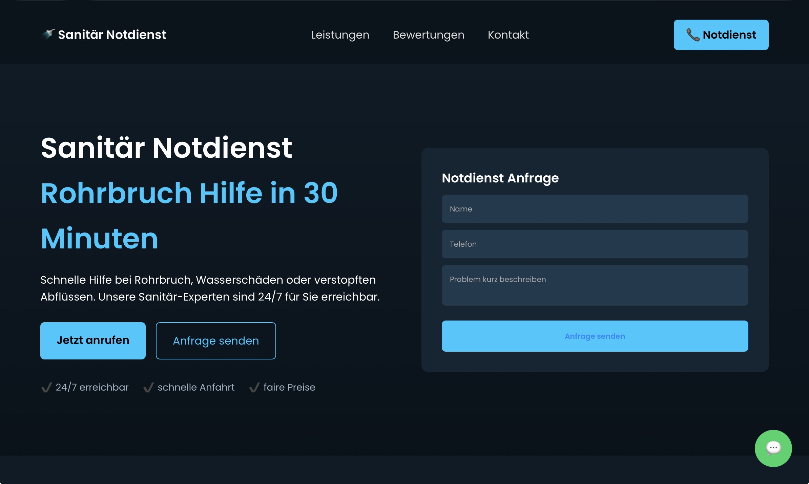
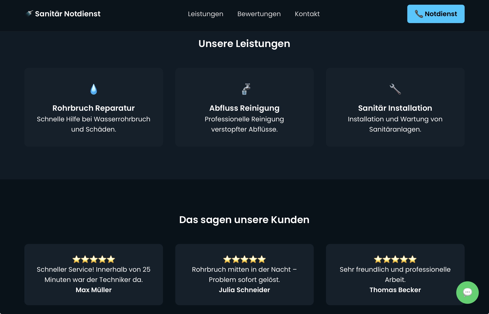
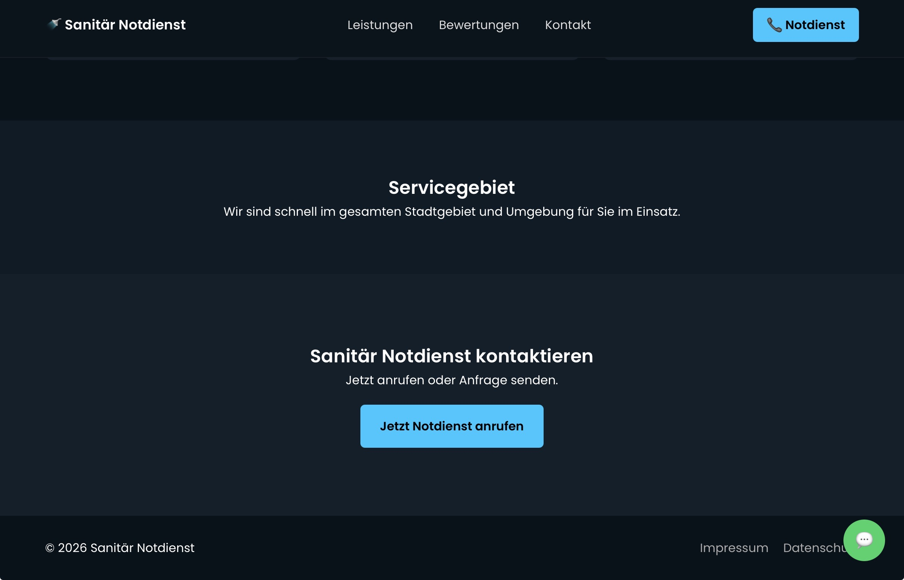

Website für Sanitär Notdienst
Professionelle Websites für Installateur- und Sanitärbetriebe. Perfekt geeignet um bei Rohrbruch oder Notfällen schnell neue Kunden zu gewinnen.
Beispiel einer Sanitär Notdienst Website
So könnte eine moderne Website für Installateur- und Sanitärbetriebe aussehen.



Was eine Sanitär Website enthalten kann
Alle wichtigen Funktionen für Notdienst-Betriebe.
Notdienst Button
Kunden können sofort telefonisch Hilfe anfordern.
WhatsApp Kontakt
Schnelle Anfragen direkt über WhatsApp.
Kundenbewertungen
Vertrauen durch echte Bewertungen.
Google Maps Karte
Der Standort des Betriebs wird direkt angezeigt.
Wonach Ihre Kunden suchen
Beim Sanitär-Notdienst sucht der Kunde unter Druck: Das Wasser läuft, die Heizung ist aus. Er ruft den ersten Betrieb an, der seriös wirkt und sofort erreichbar ist.
Rohrbruch und Wasserschaden
Suchen wie „Rohrbruch Notdienst Berlin“ kommen fast immer vom Handy und meist zu ungünstigen Zeiten. Der Anrufknopf muss ohne Scrollen sichtbar sein.
Verstopfter Abfluss
Häufigster Notfall im Alltag. Kunden suchen nach „Abfluss verstopft“ plus Bezirk und rufen den Betrieb an, der zuerst klar antwortet.
Heizungsausfall
Im Winter steigen die Anfragen schlagartig. Eine eigene Seite zur Heizungsstörung fängt diese Suchen gezielt ab.
Geplante Arbeiten
Badsanierung oder neue Leitungen sind keine Notfälle. Diese Kunden lesen in Ruhe und wollen Referenzen und einen klaren Ablauf sehen.
Was eine Notdienst-Website können muss
Bei Notdiensten haben viele Menschen Angst vor überhöhten Rechnungen. Eine Website, die Vertrauen aufbaut, hebt Sie genau davon ab.
Preise transparent machen
Anfahrt, Stundensatz oder Festpreise für typische Einsätze offen nennen. Transparenz ist bei Notdiensten das stärkste Verkaufsargument.
Echte Erreichbarkeit
Nur Zeiten angeben, die Sie wirklich abdecken. Wer 24 Stunden verspricht und nicht abnimmt, sammelt schlechte Bewertungen.
Anrufknopf immer sichtbar
Auf dem Handy bleibt der Anrufknopf beim Scrollen am unteren Rand stehen. Ein Tipp genügt.
Schnelle Ladezeit
Im Notfall wartet niemand auf eine langsame Seite. Die Website ist so gebaut, dass sie auch mit schwachem Mobilfunk sofort lädt.
Häufige Fragen
Was kostet eine Website für einen Sanitär-Notdienst?
Für die meisten Betriebe passt das Starter-Paket für 349 € (eine Landingpage) oder das Business-Paket für 1.999 € (komplette Seite mit Unterseiten je Leistung). Die Umsetzung dauert 3 bis 14 Tage.
Sollte ich meine Preise auf der Website nennen?
Wir empfehlen es. Gerade beim Notdienst schafft eine offene Preisangabe Vertrauen und unterscheidet Sie von unseriösen Anbietern.
Kann ich Bezirke als Einsatzgebiet angeben?
Ja. Wir nennen Ihre Bezirke ausdrücklich, damit Sie bei Suchen wie „Klempner Notdienst Neukölln“ gefunden werden.
Wie lange dauert die Umsetzung?
Je nach Umfang 3 bis 14 Tage.
Website für Sanitär Notdienst erstellen lassen
Wir erstellen moderne Websites für Sanitär- und Installateurbetriebe.
Perfekt geeignet für:
- Sanitär Notdienst
- Installateurbetriebe
- Rohrbruch Notdienst
- Abfluss Reinigung